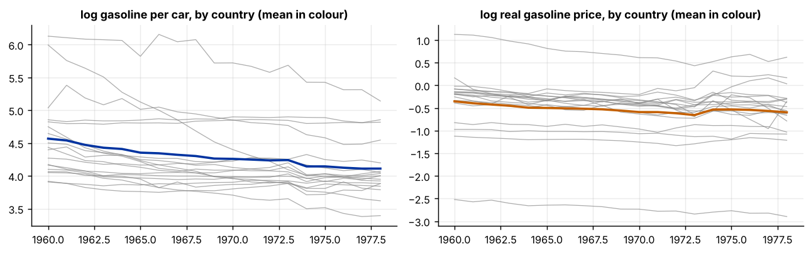

Step 1The question and the model
Comparative political economy and macroeconomics often use time-series cross-section (TSCS) data: 15 to 50 countries or states, each observed for 15 to 50 years. Our question is: how do income, the real gasoline price and the stock of cars affect gasoline consumption per car, across 18 OECD countries? The model is a pooled regression
where \(g\) is gasoline use per car, \(y\) income, \(p\) the real price of gasoline and \(c\) the stock of cars per capita.
| Symbol | Variable in the file | Definition |
|---|---|---|
| \(\ln g_{it}\) | lgaspcar |
log gasoline consumption per car |
| \(\ln y_{it}\) | lincomep |
log real per-capita income |
| \(\ln p_{it}\) | lrpmg |
log real price of motor gasoline |
| \(\ln c_{it}\) | lcarpcap |
log stock of cars per capita |
The coefficients are easy. The standard errors are the problem. In TSCS data the error of one country in a year is correlated with the errors of other countries in the same year (oil shocks hit everybody), the variance differs between countries, and errors are correlated over time within a country. Beck and Katz (1995) showed that the usual remedy, the Parks feasible GLS estimator, is badly overconfident unless T is much larger than N. Their alternative keeps the simple OLS coefficients and corrects only the standard errors. This is the panel-corrected standard error (PCSE).
Before you estimate anything
Decide how you will handle three things: the effect of units (unit dummies or not), serial correlation (a lagged dependent variable or an AR(1) correction) and the structure of the cross-sectional covariance (full, or heteroskedasticity only). PCSE only repairs the standard errors; it does not remove omitted variables, and it needs T large enough to estimate the N × N covariance matrix, which in practice means T of at least about 15.
How to write it: model section
We estimate a pooled log-linear demand equation for gasoline for 18 OECD countries over 1960–1978. Because the errors of a time-series cross-section are likely to be heteroskedastic across countries and correlated between countries in the same year, we report panel-corrected standard errors (Beck and Katz 1995) and compare them with conventional and country-clustered errors.
Step 2Load the data and see the panel
import warnings; warnings.filterwarnings("ignore")
import numpy as np, pandas as pd
import matplotlib.pyplot as plt
import statsmodels.api as sm
from scipy import stats
d = pd.read_csv("gasoline.csv").sort_values(["country", "year"]).reset_index(drop=True)
N, T = d.country.nunique(), d.year.nunique()
print(f"{N} countries x {T} years = {len(d)} observations (balanced: {len(d) == N * T})")
print(d[["lgaspcar", "lincomep", "lrpmg", "lcarpcap"]].describe().round(3).loc[["mean", "std", "min", "max"]].T)
print(f"\nT = {T}, N = {N} (Beck and Katz: PCSE works when T is at least about 15; Parks FGLS needs T much larger than N)")
fig, ax = plt.subplots(1, 2, figsize=(10, 3.2))
for c, g in d.groupby("country"):
ax[0].plot(g.year, g.lgaspcar, color="#888", lw=.7, alpha=.7); ax[1].plot(g.year, g.lrpmg, color="#888", lw=.7, alpha=.7)
ax[0].plot(d.groupby("year").lgaspcar.mean(), color="#0033a0", lw=2); ax[1].plot(d.groupby("year").lrpmg.mean(), color="#c46000", lw=2)
ax[0].set_title("log gasoline per car, by country (mean in colour)"); ax[1].set_title("log real gasoline price, by country (mean in colour)")
plt.tight_layout()18 countries x 19 years = 342 observations (balanced: True)
mean std min max
lgaspcar 4.296 0.549 3.380 6.157
lincomep -6.139 0.635 -8.073 -5.221
lrpmg -0.523 0.678 -2.896 1.125
lcarpcap -9.042 1.219 -13.475 -7.536
T = 19, N = 18 (Beck and Katz: PCSE works when T is at least about 15; Parks FGLS needs T much larger than N)
How to read it
The panel is balanced: 18 countries times 19 years gives 342 observations. T = 19 clears the rule of thumb of about 15 years, but it is barely larger than N = 18, so any method that must estimate the full 18 × 18 error covariance from 19 years is on thin ice. That is exactly why Beck and Katz prefer correcting the standard errors of OLS to running Parks GLS. The mean log price (orange) rises sharply after the 1973 oil shock in every country, which is the common shock that makes cross-country errors correlated.
Step 3Pooled OLS and what is wrong with its errors
y = d.lgaspcar
X = sm.add_constant(d[["lincomep", "lrpmg", "lcarpcap"]])
ols = sm.OLS(y, X).fit()
print(ols.summary().tables[1])
# residuals as a T x N matrix (rows: years, columns: countries); d is sorted by country, then year
E = ols.resid.values.reshape(N, T).T
R = np.corrcoef(E.T)
iu = np.triu_indices(N, 1)
lm = T * (R[iu] ** 2).sum() # Breusch-Pagan LM test of cross-sectional independence
cd = np.sqrt(2 * T / (N * (N - 1))) * R[iu].sum() # Pesaran CD test
rho = (E[1:] * E[:-1]).sum() / (E[:-1] ** 2).sum()
print(f"\nBreusch-Pagan LM = {lm:.1f} on {N * (N - 1) // 2} df, p = {stats.chi2.sf(lm, N * (N - 1) // 2):.4f}")
print(f"Pesaran CD = {cd:.2f}, p = {2 * stats.norm.sf(abs(cd)):.4f}; mean |r| between countries = {np.abs(R[iu]).mean():.2f}")
print(f"AR(1) coefficient of the residuals = {rho:.2f}")
print("\nResidual standard deviation by country")
print(pd.Series(E.std(0, ddof=1), index=sorted(d.country.unique())).round(3).to_string())==============================================================================
coef std err t P>|t| [0.025 0.975]
------------------------------------------------------------------------------
const 2.3913 0.117 20.450 0.000 2.161 2.621
lincomep 0.8900 0.036 24.855 0.000 0.820 0.960
lrpmg -0.8918 0.030 -29.418 0.000 -0.951 -0.832
lcarpcap -0.7634 0.019 -41.023 0.000 -0.800 -0.727
==============================================================================
Breusch-Pagan LM = 707.3 on 153 df, p = 0.0000
Pesaran CD = 1.22, p = 0.2226; mean |r| between countries = 0.42
AR(1) coefficient of the residuals = 0.92
Residual standard deviation by country
AUSTRIA 0.089
BELGIUM 0.070
CANADA 0.064
DENMARK 0.108
FRANCE 0.077
GERMANY 0.055
GREECE 0.230
IRELAND 0.099
ITALY 0.133
JAPAN 0.214
NETHERLA 0.067
NORWAY 0.046
SPAIN 0.099
SWEDEN 0.051
SWITZERL 0.068
TURKEY 0.193
U.K. 0.127
U.S.A. 0.052How to read it
The pooled coefficients are large and very precise: income elasticity 0.89, price elasticity −0.89, car-stock elasticity −0.76. The diagnostics warn against trusting those precise errors. The Breusch-Pagan LM test rejects cross-sectional independence decisively (707 on 153 degrees of freedom), and the average absolute correlation between two countries' residuals is 0.42. The Pesaran CD test is not significant (1.22) because positive and negative correlations cancel in its sum; when the LM and CD tests disagree, the LM test is the one that detects mixed-sign dependence. The residuals are also very persistent (AR(1) coefficient 0.92) and their spread differs by a factor of five across countries, from 0.046 in Norway to 0.230 in Greece.
Step 4Panel-corrected standard errors
def pcse(Xm, e, N, T, diag_only=False):
"""Beck-Katz: (X'X)^-1 X' (Sigma kron I_T) X (X'X)^-1, Sigma = E'E / T. Rows of Xm are sorted by unit, then period."""
Em = e.reshape(N, T).T
S = Em.T @ Em / T
if diag_only:
S = np.diag(np.diag(S))
Xz = Xm.reshape(N, T, -1) # unit, period, regressor
meat = sum(Xz[:, t, :].T @ S @ Xz[:, t, :] for t in range(T))
XtXi = np.linalg.inv(Xm.T @ Xm)
return XtXi @ meat @ XtXi
Xm = X.values
b = ols.params.values
V_pc = pcse(Xm, ols.resid.values, N, T)
V_het = pcse(Xm, ols.resid.values, N, T, diag_only=True)
cl = sm.OLS(y, X).fit(cov_type="cluster", cov_kwds={"groups": pd.factorize(d.country)[0]})
tab = pd.DataFrame({"coef": b, "conventional": ols.bse.values, "clustered by country": cl.bse.values,
"PCSE (heteroskedastic only)": np.sqrt(np.diag(V_het)), "PCSE (full)": np.sqrt(np.diag(V_pc))}, index=X.columns)
tab["PCSE / conventional"] = tab["PCSE (full)"] / tab["conventional"]
print("Pooled OLS coefficients with five kinds of standard error")
print(tab.round(3).to_string())
W = b[1:] @ np.linalg.inv(V_pc[1:, 1:]) @ b[1:]
print(f"\nWald test that all slopes are zero (PCSE): chi2(3) = {W:.1f}, p = {stats.chi2.sf(W, 3):.4f}")Pooled OLS coefficients with five kinds of standard error
coef conventional clustered by country PCSE (heteroskedastic only) PCSE (full) PCSE / conventional
const 2.391 0.117 0.442 0.125 0.064 0.546
lincomep 0.890 0.036 0.172 0.043 0.027 0.762
lrpmg -0.892 0.030 0.146 0.036 0.026 0.871
lcarpcap -0.763 0.019 0.070 0.020 0.016 0.863
Wald test that all slopes are zero (PCSE): chi2(3) = 3395.7, p = 0.0000How to read it
Compare the columns. Heteroskedasticity-only PCSE is close to the conventional errors. Full PCSE is smaller than the conventional errors (ratios 0.55 to 0.87), because the correlation between countries in this sample is partly negative. The clustered errors are four to five times larger than the conventional ones, and that gap is not about cross-sectional dependence: it comes from the residual autocorrelation of 0.92, which PCSE with no time-series correction leaves untouched. The lesson is that PCSE answers one problem only. Before reading the full PCSE column as the truth, deal with serial correlation, which is the next step.
Step 5Serial correlation: Prais-Winsten with an AR(1) coefficient
def prais_winsten(Y, Xm, N, T, rho):
Yz, Xz = Y.reshape(N, T), Xm.reshape(N, T, -1)
Ys = np.concatenate([np.sqrt(1 - rho ** 2) * Yz[:, :1], Yz[:, 1:] - rho * Yz[:, :-1]], axis=1).ravel()
Xs = np.concatenate([np.sqrt(1 - rho ** 2) * Xz[:, :1, :], Xz[:, 1:, :] - rho * Xz[:, :-1, :]], axis=1).reshape(N * T, -1)
return Ys, Xs
Yv = y.values
Ys, Xs = prais_winsten(Yv, Xm, N, T, rho)
b_pw = np.linalg.lstsq(Xs, Ys, rcond=None)[0]
e_pw = Ys - Xs @ b_pw
V_pw = pcse(Xs, e_pw, N, T)
rows = pd.DataFrame({"OLS coef": b, "OLS PCSE": np.sqrt(np.diag(V_pc)), "PW coef": b_pw, "PW PCSE": np.sqrt(np.diag(V_pw))}, index=X.columns)
print(f"Prais-Winsten with a common AR(1) coefficient rho = {rho:.3f}")
print(rows.round(3).to_string())
# residual autocorrelation and cross-sectional correlation after the correction
E2 = e_pw.reshape(N, T).T
print(f"\nResidual AR(1) after the correction: {(E2[1:] * E2[:-1]).sum() / (E2[:-1] ** 2).sum():.3f}")
# the alternative: a lagged dependent variable
d["lag_y"] = d.groupby("country").lgaspcar.shift(1)
dl = d.dropna()
Xl = sm.add_constant(dl[["lag_y", "lincomep", "lrpmg", "lcarpcap"]])
ldv = sm.OLS(dl.lgaspcar, Xl).fit()
Vl = pcse(Xl.values, ldv.resid.values, N, T - 1)
print("\nLagged dependent variable model with PCSE")
print(pd.DataFrame({"coef": ldv.params, "PCSE": np.sqrt(np.diag(Vl))}).round(3).to_string())
print(f"Implied long-run price elasticity: {ldv.params['lrpmg'] / (1 - ldv.params['lag_y']):.3f}")Prais-Winsten with a common AR(1) coefficient rho = 0.923
OLS coef OLS PCSE PW coef PW PCSE
const 2.391 0.064 1.734 0.231
lincomep 0.890 0.027 0.409 0.051
lrpmg -0.892 0.026 -0.392 0.044
lcarpcap -0.763 0.016 -0.538 0.033
Residual AR(1) after the correction: -0.025
Lagged dependent variable model with PCSE
coef PCSE
const 0.254 0.075
lag_y 0.929 0.021
lincomep 0.066 0.020
lrpmg -0.078 0.021
lcarpcap -0.044 0.018
Implied long-run price elasticity: -1.099How to read it
Removing the AR(1) component changes the coefficients a great deal: the income elasticity falls from 0.89 to 0.41, the price elasticity from −0.89 to −0.39, and the car-stock elasticity from −0.76 to −0.54. The standard errors double or quadruple (price: 0.026 to 0.044), and the residual AR(1) coefficient is now −0.025, so the dynamics are gone. The dynamic alternative gives a coherent story: the lagged dependent variable has a coefficient of 0.93, the short-run price elasticity is −0.08 and the implied long-run price elasticity is −1.10. A static pooled regression mixes short-run and long-run effects and is not the model to report here. Choose between Prais-Winsten and a lagged dependent variable on theory, and report both if they tell different stories.
Do not skip this step
PCSE alone on a series with an AR(1) coefficient of 0.92 gives confident, wrong inference. Beck and Katz (1996) recommend either a lagged dependent variable or Prais-Winsten before computing PCSE.
Step 6Unit effects
U = pd.get_dummies(d.country, drop_first=True).astype(float)
Xu = pd.concat([X, U], axis=1)
fe = sm.OLS(y, Xu).fit()
Vu = pcse(Xu.values, fe.resid.values, N, T)
k = 4
print("Pooled OLS versus unit dummies, both with PCSE")
print(pd.DataFrame({"pooled": b[1:], "pooled PCSE": np.sqrt(np.diag(V_pc))[1:],
"unit dummies": fe.params.values[1:k], "dummies PCSE": np.sqrt(np.diag(Vu))[1:k]}, index=X.columns[1:]).round(3).to_string())Pooled OLS versus unit dummies, both with PCSE
pooled pooled PCSE unit dummies dummies PCSE
lincomep 0.890 0.027 0.662 0.046
lrpmg -0.892 0.026 -0.322 0.038
lcarpcap -0.763 0.016 -0.640 0.019How to read it
Country dummies move the slopes a lot: the price elasticity goes from −0.89 to −0.32, the income elasticity from 0.89 to 0.66 and the car-stock elasticity from −0.76 to −0.64, with PCSE of 0.038, 0.046 and 0.019. The pooled estimates therefore mix between-country differences with the within-country response to prices. Dummies absorb permanent differences between countries, such as fuel taxes and geography, but they also remove all between-country variation and with T = 19 they can make a lagged dependent variable biased. Treat the pooled and dummy results as a sensitivity check and say which one your argument rests on.
Step 7What to report in the paper
| Item | What to give |
|---|---|
| Sample | N, T, balanced or not, and the years |
| Estimator | OLS or Prais-Winsten, common or panel-specific rho, full or heteroskedastic-only covariance |
| Serial correlation | The estimated rho, or the lagged dependent variable, and the residual autocorrelation after the correction |
| Cross-sectional dependence | Breusch-Pagan LM (and Pesaran CD) before the correction |
| Standard errors | PCSE next to conventional and clustered errors |
| Sensitivity | With and without unit effects |
How to write it: results section
Pooled OLS residuals reject cross-sectional independence (Breusch-Pagan LM = 707.3, p < 0.001) and are highly persistent (AR(1) = 0.92). We therefore estimate the model by Prais-Winsten with a common AR(1) coefficient of 0.92 and report panel-corrected standard errors (Beck and Katz 1995). The price elasticity of gasoline demand is −0.39 (PCSE 0.044) and the income elasticity is 0.41 (0.051). A dynamic specification with a lagged dependent variable gives a long-run price elasticity of −1.10.
Step 8Common mistakes
- Using PCSE with a short panel. With T below about 15 the covariance matrix is badly estimated. Use clustered errors or a model for the dependence instead.
- Ignoring serial correlation. PCSE corrects the cross-sectional part only.
- Treating PCSE as always larger. It can be smaller than conventional errors, as here; it is correct, not conservative.
- Reading PCSE as a fix for omitted variables. It changes the standard errors, not the estimates.
- Using it for N much larger than T. The N × N matrix is then not estimable.